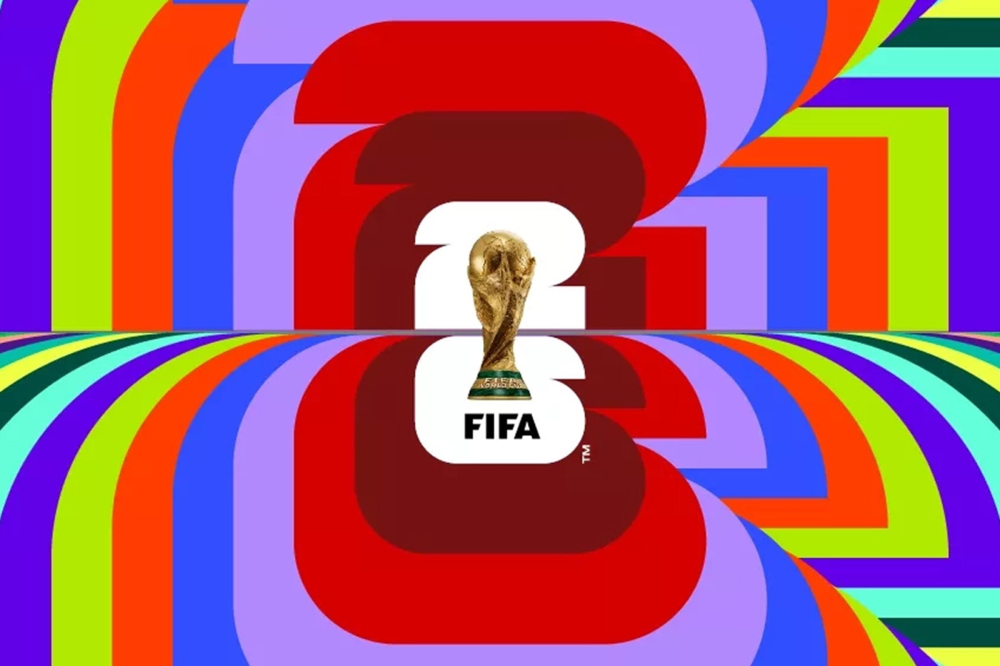

一个全球顶级赛事 IP,如何在美加墨三国合办的约束下,做成一套标准化、可复用、能变现的全球品牌系统 —— 受众 · 定位 · 视觉 · 商业化 · 本地化 · 度量 · 批判,7 模块拆解。
北美足球 = 待培育的成长市场:27% 球迷、增长停滞但稳,年轻化(Gen Z 40%)+ 西语裔 54% / 亚裔 51% 驱动,且这群人对品牌赞助的响应度全运动最高。先定义"对谁",后面每个品牌决策才有主线。
计划观赛 vs 超级碗 69% — 仍小众,故品牌要极简、可复用、好传播
年轻主轴 · 社媒原生 · 二创驱动
西语裔 / 亚裔领先 · 交叉细分放大镜
来源 Numerator 2026 · 仍小众 = 品牌使命 = 推向 mainstream
来源 Numerator / Gallup 2026 · 主轴=年轻 × 放大镜=西语裔 / 亚裔
历届抱单一主办国文化(南非动物 / 巴西桑巴)。26 = 史上首次三国合办,抱哪国都偏袒 → 传统办法结构性失效。FIFA 把 logo 锚到赛事本体(几何 26 + 大力神杯),故意"无地域",文化全推外层。取舍:放弃单国情感浓度,换来三国中立 + 跨届可复用的品牌资产。
Hub-and-Spoke 架构 · Branded House 主导 + 受控放权 —— 中心强管控(统一、复用、不偏袒),边缘放权(在地文化、差异表达)。

emblem = 系统骨架:几何 26 + 大力神杯当数字(扁平字 × 立体金杯反差)、PW26 定制字 + Noto Sans、英法西三语字库(=美加墨三国官方语)、色彩系统(主色 + 主办国色 + 城市限定,标 CMYK/RGB)。它就该"无聊" —— 要无限缩放、跨届复用、中性不偏袒,出彩反而限制复用。
但 16 城海报是该出彩的地方,却用了 90 年代插画风 —— 对 Gen Z 社媒原生受众(M0)不出片 = 没免费声量(M5)。设计审美 → 翻译成"视觉资产与分发场景错配",才是专业判断。
赞助营收,较 2022 +37%,近售罄,单项赛事史上最高。三国扩容把每条营收流做大;首用动态票价 + 转售抽 15%,把二级市场也收进来。净场 / 品类排他 / 造广告库存(补水时间)给赞助商排他与确定性 —— 这才是赞助费敢涨的根基。设计即生意:统一 VI 降本、放权增收。
来源 SportsPro / Ampere Analysis · 部分为预测值
全球统一,碰都不能碰 — 保证跨三国一致、可复用
框架内变化,统一标 CMYK/RGB
本地艺术家、风格故意不一致 — 受控放权
墨西哥 = 亡灵节万寿菊 + 阿兹特克雄鹰:选"墨西哥人自己骄傲的符号"
龙舌兰 / 草帽 / 骷髅刻板三件套 — 外人眼里的墨西哥,踩雷
借势=蹭氛围不蹭 IP;非官方赞助商不碰官方商标(ambush 红线)
logo 被球迷狂喷(ugly/basic,千条差评),但赞助卖爆(+37%)。分裂信号 → 真买单方是 B 端赞助/转播商,不是 C 端球迷。营销漏斗分层度量,量 vs 质 / leading vs lagging / vanity vs actionable 要分清。
| 战略选择 | 代价 / 受损方 | 失败条件 | FIFA 辩护 (steelman) |
|---|---|---|---|
| placeless 中性核 | 没灵魂 / clip-art · 球迷情感 | 城市层没接住→显空洞 | 16 城各有 identity,非真空设计 |
| 动态票价 + 抽成 | 置换现场灵魂人群 · 草根球迷 | 棘轮效应→代际流失、文化根基侵蚀 | 需求价格无弹性,理性赌注 |
| host city 模式 | 成本转嫁城市 · 纳税人 | 城市财政纠纷 | FIFA 控收入、城市担成本 |
系统层:这套"为 B 端商业最大化"的 branding,把 C 端球迷与主办城市放到次要位。短期商业大胜,但世界杯品牌资产的根 = 球迷情感 —— 是用品牌资产换商业变现,可能在透支未来。
世界杯 26 在 杀鸡取卵 —— 年轻新客是要养的资产,不是一次性收割的流量。
FIFA 靠铁杆的价格无弹性敢涨价,却筛掉了它刚想培育的年轻 casual 新客。给出海品牌的法则:铁杆可溢价,年轻新客必须分层定价(可负担入口 + 身份认同增值),用文化/身份提高付费意愿,而非涨价吓跑。
这套若延续到 2030,FIFA 会亲手流失它在北美刚培育起来的年轻球迷。
同一套赛事品牌方法论,针对不同出海公司,我会这样落地。选行业 → 选公司,看我的具体打法:
这份案例本身 = 用 agent-reach 多平台调研 → 7 模块框架 → 数据可视化 → vibe coding 建站,一人跑完调研 / 定位 / 内容 / 数据 / 设计全流程。这就是"AI 一人多岗"的实证。